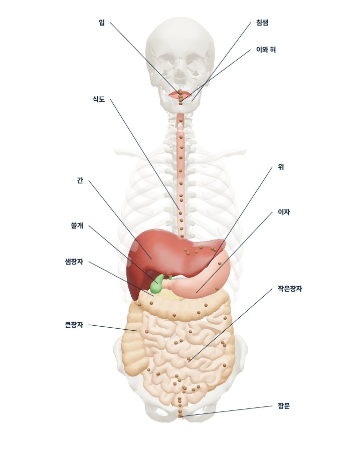

우리가 먹은 음식을 이용하여 에너지를 만들려면 세포로 영양소가 흡수되어야 해요. 하지만 녹말처럼 크기가 큰 영양소는 세포 안으로 흡수되기 어려워요.
그림 Ⅵ-2 형식 · 녹말은 크기가 작은 포도당으로 분해되어야 세포막을 통과하여 흡수될 수 있어요 (모형)
따라서 영양소가 세포막을 통과할 수 있을 만큼 작게 분해하는 과정이 필요해요. 이 과정을 소화라고 하며, 우리 몸의 소화계에서 일어나요.
소화계는 음식물이 지나가는 입, 식도, 위, 작은창자, 큰창자 등의 과, 여기에 연결되어 을 분비하는 침샘, 간, 쓸개, 이자 등의 으로 구성돼요.

그림 Ⅵ-3 형식 · 우리 몸의 소화계 (실제 사람 자료로 만든 3D 모형)